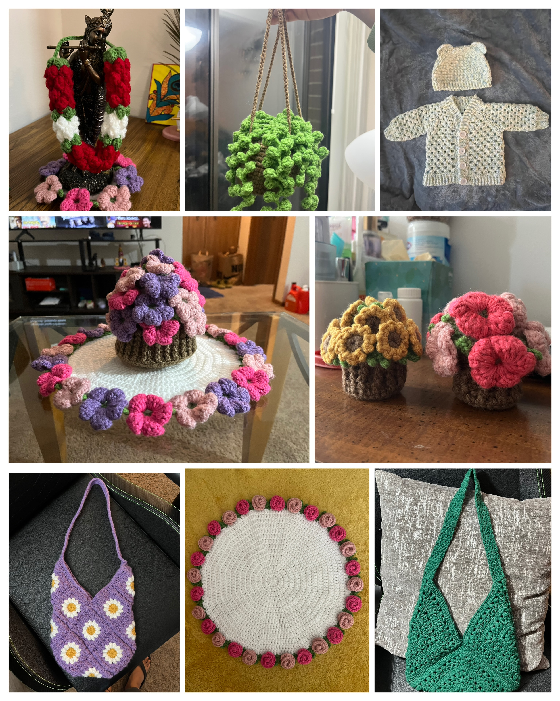
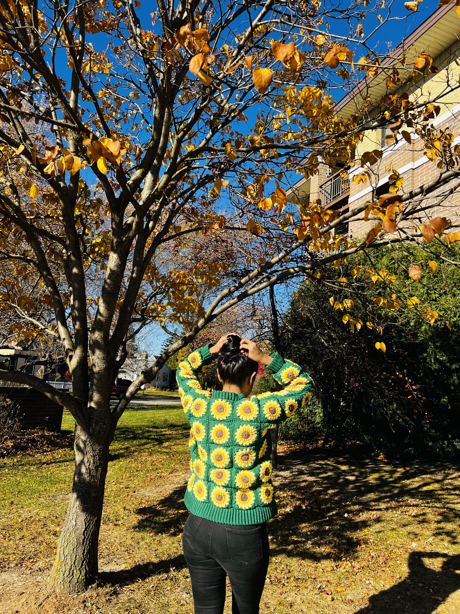

I design and modernize enterprise service management solutions using ServiceNow and Jira Service Management (JSM). My work focuses on ITIL-aligned workflow design, Service Catalog configuration, CMDB/Assets modeling, automation rules, and platform integrations using REST APIs and webhooks.
I recently graduated with a Master’s in Computer Science from the University of Massachusetts Lowell (Class of 2025), and enjoy solving operational challenges through scalable automation, governance, and documentation.
View LinkedIn View GitHubUniversity of Massachusetts Lowell | Lowell, MA
August 2023 – May 2025
GPA: 3.74 / 4.0
Gayatri Vidya Parishad College of Engineering | Visakhapatnam, India
June 2019 – May 2023
GPA: 9.06 / 10
State of Wisconsin – Department of Administration (DOA) | Remote, USA
Dec 2025 – Present
Holiday Channel | Remote, USA
Oct 2025 – Nov 2025
Logan Data Inc. | Remote, USA
July 2025 – Sept 2025
University of Massachusetts Lowell | Lowell, MA, USA
Sep 2023 – May 2025
Built automated ETL pipelines and Power BI dashboards using Azure Data Factory and Azure SQL.
View on GitHub →Developed a Power Apps + Power BI solution enabling real-time tracking and financial reporting.
View on GitHub →Transformed raw datasets with PySpark and built dashboards to analyze unemployment trends.
View on GitHub →Implemented Delta Lake pipelines and centralized governance using Unity Catalog.
View on GitHub →Implemented a Snowflake solution on AWS to ingest JSON data from Azure, using Snowpipe for real-time ingestion, Streams & Tasks for synchronization, Materialized Views for analytics, and dynamic masking for data security.
GitHub →Created a Python-based application that scrapes job listings from multiple portals using BeautifulSoup & Selenium, filters them by keywords, and sends instant email alerts for matching positions.
View on GitHub →Designed a responsive weather forecasting app using HTML, CSS, JavaScript, and the OpenWeatherMap API, displaying real-time temperature, humidity, and forecast visuals based on user location.
View on GitHub →Developed a fun Python-based console game that randomly selects a number and provides hints to guide users toward the correct answer, showcasing basic logic and user interaction.
View on GitHub →I don’t use many social media accounts. I prefer spending my free time crocheting. It’s my way to unwind, focus, and bring imagination to life through color and texture. The patience and attention to detail it takes often remind me of designing an ITSM workflow. Both require structure, consistency, and a clear end goal.
For me, crocheting is more than a hobby. It’s a quiet art of patience and problem-solving. Each stitch builds on the last, just like building a Service Catalog experience or mapping steps in an approval flow. It has taught me rhythm, attention to structure, and the satisfaction of creating something reliable from scratch. Whether I’m refining a crochet pattern or improving a service request process, I enjoy the same feeling of turning complexity into clarity.

